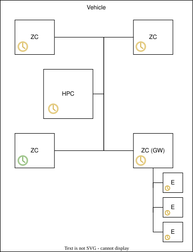
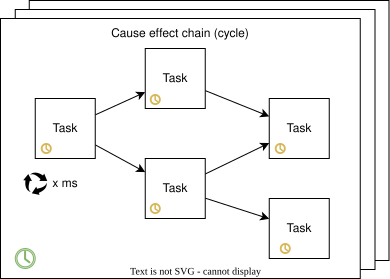

Time#
Time
|
status: valid
security: YES
safety: ASIL_B
|
||||
Feature flag#
To activate this feature, use the following feature flag:
experimental_time
Abstract#
Motivation#
Efficient and accurate time management is critical in automotive systems, affecting functionality, safety, and reliability across various applications. Time handling spans several layers, from synchronization with external time sources to the consistent use of logical time within in-vehicle software cycles. For this reason, the motivation section describes the context broadly, even if the actual feature request later focuses on a more specific scope.
External Time Synchronization#
External time synchronization establishes a reference to a global time standard, such as UTC, through methods like GPS-based synchronization or backend servers accessed via cellular networks. These time sources are relevant for fleet-wide timestamping, telematics, and ensuring regulatory compliance (e.g., event logging, cybersecurity).
The details of external synchronization are out of scope for this request but are included to clarify the overall context.
In-Vehicle Time Synchronization#

Within the vehicle, synchronization ensures that all ECUs reference a consistent internal time. In modern architectures, this is achieved by designating a statically defined Time Grand Master, typically a zonal controller equipped with a fast-booting microcontroller and responsible for early vehicle functions such as key detection. This controller synchronizes with the external time source and propagates time over the in-vehicle network.
The synchronization protocols relevant here are primarily Ethernet-based. The focus lies on gPTP (IEEE 802.1AS) and the corresponding specifications in AUTOSAR Adaptive to ensure compatibility with existing ECUs. Syntonization, the alignment of clock frequency, is as essential as synchronization and must be supported to maintain long-term timing consistency.
Bridging between different network domains (e.g., Ethernet to CAN) is outside the scope of this feature. In the system context, the High-Performance Computer (HPC) is assumed to be a slave in the time distribution topology and connects via Ethernet to the grandmaster. Time synchronization within CAN segments, typically handled by zonal controllers, is not covered by this feature.
Clocks, Accuracy, and Reading Current Time#
Modern software environments contain several types of clocks (or time bases), including:
Local clocks, such as monotonic or steady clocks
Synchronized clocks, aligned with a vehicle-wide or external time base
Secure or authentic clocks, protected against tampering
Mixing clock types unintentionally can lead to non-deterministic behaviors, negatively affecting system stability and correctness. Therefore, explicit selection of the time base by the application is mandatory. TimePoints of different clocks shall be incompatible types.
Applications must be able to detect when a chosen time base is invalid or unsynchronized, enabling them to define appropriate fallback or error-handling strategies. Error states or drift conditions must be detectable by the application.
Clock introspection capabilities are required, allowing applications to determine synchronization status and time elapsed since the last successful synchronization. This information is vital during error handling or fallback situations.
Access to TimePoints should be as performant as technically feasible due to their frequent use in control loops and high-frequency applications. Although specific latency targets are not defined here, low latency is a fundamental design consideration.
For cryptographic scenarios the feature also targets secure or authentic clocks. In such cases, a tamper-resistant time source is needed to ensure that time cannot be rolled back to re-enable expired certificates or bypass security controls. Authentic clocks might be signed or verified using hardware security modules.
To integrate cleanly with modern programming languages, the time access API should align with idiomatic constructs (e.g., std::chrono in C++, time in Rust), while making clear that the source of time is provided by the S-CORE platform. A dedicated namespace such as score::chrono may wrap native types to make the time source explicit.
Consistent Logical Time Within Cause-Effect Cycles#

In distributed automotive applications, control logic is often structured into cause-effect chains. These chains consist of multiple interdependent tasks executing concurrently. Within each cycle of these chains, it is critical that all tasks perceive the same logical timestamp, even if their execution occurs at different actual CPU times.
Sharing a consistent logical timestamp ensures deterministic computations. For instance, integrating sensor measurements such as speed over time into position data requires stable and jitter-resilient timestamps shared across tasks. Additionally, consistent logical time enables reproducibility in testing, simulation, and validation scenarios, as the sequence and timing of events can be reliably replayed.
Logical time must be explicitly provided to the tasks within these cause-effect chains, but its availability in background processes or non-time-sensitive tasks is not required.
Specification#
Note
From S-CORE workshop regarding Clocks, Accuracy, and Reading Current Time:
The basic concept of Time is represented by two initial and one derived element:
Clocks are the sources of time. A clock produced a sequence on Timepoints, each representing a specific point in time. Timepoints have an Order, i.e. the relations “equal” and “less than” are defined. Because of this, TimePoints can be substracted, creating a TimeSpan.
The following operations are valid between TimePoints and TimeSpans:
Substraction: TimeSpan := TimePoint - TimePoint; TimeSpan := [TimeSpan - TimeSpan] | Negative TimeSpans shall not be allowed, the substraction saturates to zero.
Addition: TimePoint := TimePoint + TimeSpan; TimeSpan := TimeSpan + TimeSpan
Multiplication: TimeSpan := Factor * TimeSpan
Equality: bool := TimePoint == TimePoint; bool := TimeSpan == TimeSpan
Comparison: bool := TimePoint < TimePoint; bool := TimeSpan < TimeSpan (this includes with equality the less-than-or-equal relation)
The clock is characterized by main attributes:
Frequency: The frequency with which the clock updates the TimePoints it issues.
Resolution: The accuracy of an individual timepoint. While an ideal clock would have a resolution that is the reciproke of the frequency in reality this may not be the case.
Monotony: A clock can be monotonous (TP[n+1] >= TP[n] is always maintained), strictly monotonous or not monotonous
Steady: A steady clock will update in fixed intervals, i.e. each increment is exactly 1/Frequency. For example system clock is neither monotonous nor steady because of summer/winter time and leap seconds.
Epoch: The TimePoint the clock started ticking. The semantic of the epoch is a documentation property of the clock. Example: Unix system clock has an Epoch value of 0 on 01.01.1970, 00:00:00 UTC.
In-Vehicle Time Synchronization#
Definitions:
Time client An actor that runs on the system and is responsible for
synchronizing the local clock with an external time host using the PTP protocol (IEEE 802.1AS).
providing the synchronization meta information to the clients, including score::time feature. Where meta information includes, but not limited to synchronization status (synchronized, not synchronized, unstable), time difference to the external time source, last synchronization time, current time point of the local clock and so on.
Synchronization process metadata Data which is provided by the time client and includes the current synchronized time, synchronization status, rate correction, and so on, which are the output or intermediate artifacts of the synchronization process.
The diagram bellow illustrates the data flow and interactions between the Time client, score::time middleware, and client applications within an ECU during PTP-based time synchronization.
Fig. 11 Data flow between time client, score::time, and clients#
Where
The time client (gPTP stack) communicates with an external time host to maintain accurate time synchronization using the PTP protocol.
The Time base provider periodically reads the synchronized time from the Time client, validates it, and writes the results (including status flags and timestamps) into some shared resource towards score::time middleware. Different IPC mechanisms can be used for to provide actual synchronized time and its metadata to Time base provider, like:
shared memory, then the time client writes the synchronized time and its metadata into the shared memory, which is then read by the Time base provider middleware.
Time base provider polls for current EMAC value with
devctlcalls.other IPC methods.
The score::time middleware accesses this shared resource to obtain the latest synchronized time and its metadata, adjusting the time as needed based on the local clock by requests from client applications.
This architecture ensures efficient, low-overhead distribution of synchronized time and its status to multiple applications within the ECU, supporting both real-time and diagnostic use cases.